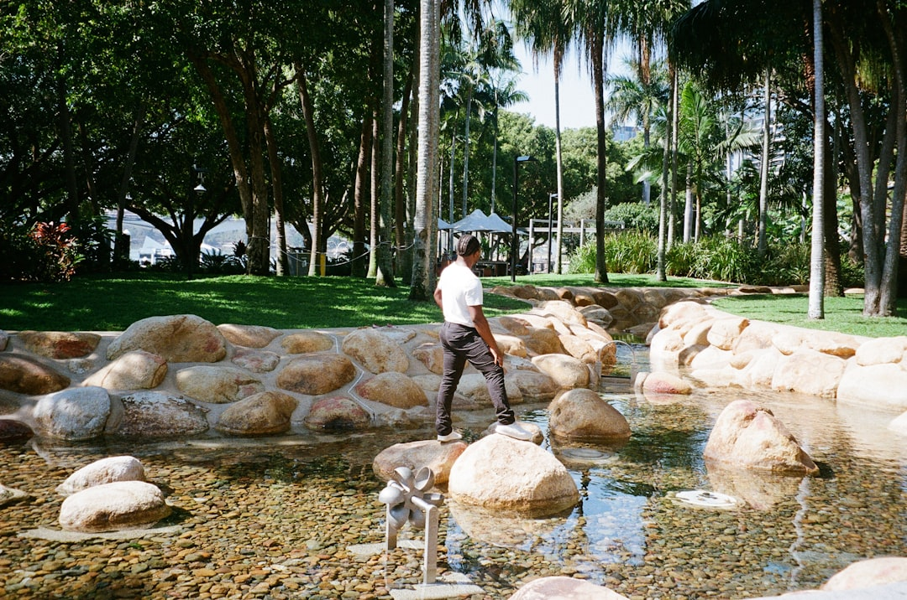

Brisbane pool and retaining projects are best scoped before construction choices are locked in. The published guidance names 6 planning paths and 4 early checks: levels, water, access and approvals. It also states that quotes, prices, rates and estimates are indicative only, subject to individual circumstances and revision, and are not a binding offer or professional advice.
For homeowners comparing pool retaining walls brisbane options, the practical task is to organise site facts before asking anyone to price or review the work.
Pool Retaining Walls Brisbane Explained
Pool Retaining Walls Brisbane presents the job as a site planning question, not only a pool build or wall build. The useful starting point is how pool placement, retained levels, drainage and access affect one address before construction decisions are fixed.
A strong first brief describes what is already visible. Note where the pool may sit, whether there are existing retaining walls, how the ground changes across the area, where water appears to move after rain, and how machinery or materials could reach the work zone. The enquiry prompt asks for access and nearby structures, with photos able to be provided later if a provider asks for them.
An enquiry is not an accepted job. The published wording says submitting the form does not confirm provider availability, timing or acceptance of the work. Treat the first conversation as a way to organise the site facts, then confirm the scope, approvals and advice that apply to the actual property.
Who this applies to
This guide applies to owners planning a new pool near a level change, owners reviewing a pool-adjacent retaining wall, and households trying to understand whether the pool layout, wall and finished surrounds should be considered together.
- Sloping blocks: ask how excavation sequence, working room and final ground levels affect the pool position.
- Existing walls: ask whether wall condition, footing, drainage and proximity need review before a new pool is planned.
- Concrete pool shells: ask how the shell, surrounds, barriers and retaining details will sit together.
- Unclear approvals: ask which rules, certification questions and professional advice apply to the specific address.
The Brisbane context is described broadly: inner west, established river suburbs and acreage-edge localities. Use that as a prompt to think about access, changing levels and address-specific approval questions, not as proof that every suburb has the same construction pathway.
Questions to settle before the quote
A quote request is easier to assess when it explains the decisions that are still open. Dimensions alone will not describe how the finished pool level, wall alignment, surrounding ground and drainage approach need to work together.
Before requesting a project review, prepare answers to these questions:
- Where might the pool sit, and what nearby structures could affect excavation or wall planning?
- Are there existing retaining walls near the proposed work area?
- What do you know about site access, including working room, machinery movement and material handling?
- Where does water appear to move across the area now?
- Do you already have reports, plans or advice that should be considered?
Keep separate notes for confirmed facts and assumptions. A known existing wall is different from an assumed footing detail. A visible water path is different from a designed drainage solution. Clear labels help the provider identify what can be discussed from the brief and what needs inspection, certification or engineering input.
Choosing the right planning path
The 6 named paths can be used as a decision map. Start with integrated pool and retaining planning when placement, retained levels and drainage need to be considered in the same conversation. Use sloping-site excavation planning when changing ground, access and construction sequence may shape the pool layout before design choices are settled.
Structural retaining wall coordination becomes relevant when a wall beside the pool raises engineering questions. Drainage and waterproofing coordination fits projects where water management and pool-to-wall interfaces need early attention. Concrete shell and surround planning is useful when the shell, surrounding levels, safety barriers and retaining details all meet in a tight area. Existing pool wall renewal planning suits a property where the pool and wall already exist but the renewal pathway is unclear.
Those paths are not fixed packages. A single Brisbane property may raise more than one issue, especially when retained ground, access and water movement converge near the intended pool area. Use the labels to explain the problem in plain language, then ask which advice must be confirmed before the scope is fixed.
Approvals and advice boundaries
The published FAQ is careful about approval questions. It says requirements depend on the wall, site and proposed work, and advises checking Brisbane City Council guidance and seeking project-specific advice. A general article cannot decide what applies to a particular wall, pool, address or scope.
A practical enquiry should ask who needs to review the pool and retaining interface before work is priced as a fixed scope. The answer may depend on the proposed work and the address. Housing Industry Association and Master Builders Australia provide broader building industry context, while the contractor, certifier or relevant adviser must confirm the requirements for the actual project.
Keep records of the assumptions used in early conversations: intended pool position, existing walls, finished levels, drainage observations, access notes and any reports already available. If those assumptions change, the quote or advice may need revision.
- Map the work area. Describe the intended pool location, nearby structures, existing walls and obvious changes in level.
- Record water movement. Note where water appears to travel before excavation or new hardscape hides the pattern.
- Check access. List working room, machinery movement and material handling constraints that could shape the build sequence.
- Ask approval questions. Confirm which rules, certification steps and professional advice apply to the specific wall, pool and address.
- Request a review. Send the prepared site context and any existing reports so the first response can focus on the real project constraints.
| Scenario | Main question | What to prepare |
|---|---|---|
| New pool near retained ground | Can the pool position, wall interface, levels and drainage be planned together? | Proposed pool location, ground level changes, access notes and water observations |
| Existing wall near a new pool | Could condition, footing, drainage or proximity affect the proposed work? | Photos, wall location, known history and any existing reports |
| Sloping site excavation | How will access, excavation sequence and finished levels affect layout? | Machinery access notes, material handling constraints and preferred pool area |
| Concrete shell and surrounds | How will the shell, surrounds, barriers and retaining details relate? | Early layout ideas, surrounding level notes and interface questions |
Common questions
Do I need approval for a pool retaining wall in Brisbane? Requirements depend on the wall, site and proposed work. Check Brisbane City Council guidance and seek project-specific advice before treating any approval answer as settled.
Can an existing retaining wall affect a new pool? Yes. The published guidance says its condition, footing, drainage and proximity may affect the project, so those points need review for the specific address.
What should I include when asking for a quote? Share the intended pool location, existing walls, levels, access constraints, drainage observations and any reports already available. The enquiry prompt also asks for access and nearby structures.
Are prices or estimates binding? No. Published wording states that quotes, prices, rates and estimates shown or provided are indicative only, subject to individual circumstances and revision, and are not a binding offer or professional advice.
This guide covers early site planning questions for Brisbane pool and retaining wall projects before a quote or project review.